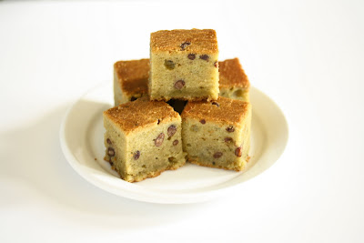

Green Tea Mochi Cake

Description
Chewy and studded with sweet red beans. This is an easy recipe that you can make in one bowl!
Ingredients
- Mochiko rice flour
- Softened butter
- Evaporated milk
- Eggs
- Baking powder
- Vanilla
- Matcha green tea powder
- Sweetened small red beans
Instructions
- Preheat oven to 350°F
- Cream the butter with sugar. It helps to melt the butter a little first. Mix in the evaporated milk to the butter/sugar mixture. Mix eggs into the mixture. Mix in the rice flour, baking powder and vanilla. Mix in the matcha green tea powder. Mix in the red beans. I had a 16 oz jar of them, and used approximately half the jar because I didn't want the red beans overwhelming the green tea flavor.
- Pour mixture into a 9 x 13 pan. Bake for approximately 1 hour. Let cake completely cool, allowing the mochi to set, before cutting and serving.